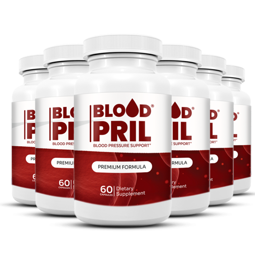
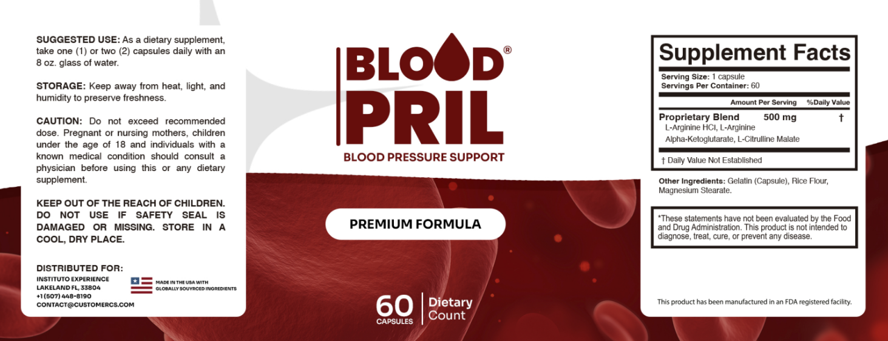

Does Blood Pril Work? The Nitric Oxide Science, Dose by Dose
The mechanism is real. The question is whether half a gram to a gram of amino acids is enough to matter, and how you'd ever know.
Key takeaways
- The pathway is genuine. Arginine and citrulline are raw material for nitric oxide, which helps blood vessels relax.
- The dose is the weak point. Blood Pril supplies 0.5 to 1 gram a day of all three amino acids combined. Blood pressure studies mostly use several grams.
- The average effect in studies is modest. Even at research doses, oral L-arginine lowered readings by a few points on average.
- Lifestyle and medication do far more. DASH eating, less sodium, exercise and weight loss each beat any amino acid trial, and prescribed drugs stay prescribed.
- A home cuff is the only honest test. Weekly averages before and during use tell you more than any label.
Does Blood Pril work? Partly, in theory. Its L-arginine and L-citrulline are building blocks for nitric oxide, which helps blood vessels relax, so the product can reasonably claim to support circulation. But its 0.5 to 1 gram daily dose sits well below the amounts used in blood pressure studies, and it can't replace medication.
This page is about the science. We explain the nitric-oxide pathway, put the Blood Pril dose next to the research, list what reliably lowers blood pressure and show you how to test any supplement at home. For price, refund and the full verdict, see our Blood Pril review.

Blood Pril: check today's price
A nitric-oxide amino acid blend (arginine and citrulline) for circulation support. One or two capsules a day. Sold only on the official site, with a 60-day money-back guarantee.
See the official price →How is Blood Pril supposed to work?
The inside of every artery is lined with a thin layer of cells called the endothelium. Those cells contain an enzyme, nitric oxide synthase, that takes the amino acid arginine and turns it into nitric oxide. The gas drifts into the muscle layer of the vessel wall and tells it to relax. Relaxed muscle means a wider vessel, lower resistance and easier flow.
That's the whole thesis behind Blood Pril. Supply more arginine, directly or through citrulline, and the lining may have more raw material for nitric oxide. Nitroglycerin, the chest-pain drug, works on the same final step by releasing nitric oxide directly, which is why the two don't mix well.
One catch is built into the biology. In healthy people, the enzyme usually already has plenty of arginine to work with, because blood levels sit well above what it needs. Extra raw material can't do much when supply isn't the bottleneck. That's one reason results in studies vary so much from person to person.
Where things can go wrong is the lining itself. Smoking, high blood sugar, high cholesterol and age all wear down the endothelium, so it makes less nitric oxide from the same arginine. In that setting the limit is the damaged lining, not the raw material. Fixing the causes usually does more than feeding the pathway.
Why does Blood Pril use citrulline as well as arginine?
Swallowed arginine has a rough journey. Gut bacteria and an enzyme called arginase break down a large share of it in the intestine and liver before it reaches the bloodstream. Citrulline mostly escapes that. The kidneys convert it into arginine afterwards, and studies find that oral citrulline raises blood arginine more reliably than the same amount of arginine itself.
So including citrulline malate is the smart choice on the label. The three ingredients are:
- L-arginine HCl: arginine bound to hydrochloride, a common, stable salt.
- L-arginine alpha-ketoglutarate (AKG): arginine paired with a compound from the body's energy cycle, popular in sports products. There's no strong evidence it beats plain arginine for blood pressure.
- L-citrulline malate: citrulline bound to malic acid, the acid in apples. By weight, part of each milligram is malate rather than citrulline.
The label doesn't say how the 500 mg is divided among them. That matters for this question, because the more of it is citrulline, the more of the dose actually reaches the blood.

How much arginine and citrulline do studies use?
This is where the evidence and the bottle part ways. Here's the comparison, using the published ranges from the research literature.
| Source | Daily amount | Notes |
|---|---|---|
| Blood Pril, 1 capsule | 500 mg total blend | Split between three ingredients not disclosed |
| Blood Pril, 2 capsules | 1,000 mg total blend | Label maximum |
| L-arginine blood pressure trials | Mostly 4 to 24 g | Averaged in a 2011 meta-analysis |
| L-citrulline blood pressure and blood flow trials | Commonly 3 to 6 g or more | Often short studies, small groups |
| Typical US diet | Roughly 4 to 5 g of arginine | From meat, fish, dairy, nuts and beans |
The last row puts the dose in perspective. Most people already eat several grams of arginine a day without thinking about it. A gram from two capsules adds something like a fifth to a quarter on top of that. It's not nothing, but it's well short of the doubling or tripling that trials test.
What did the blood pressure studies actually find?
The best-known summary is a 2011 meta-analysis that pooled randomized, placebo-controlled trials of oral L-arginine. On average, systolic pressure dropped by about 5 points and diastolic by about 2 to 3 points. The trials were small, short and mixed in who they enrolled, and the doses were in grams, not milligrams.
Citrulline research is younger. Small trials at several grams a day have reported modest drops in some groups, often people with raised readings, and little change in others. Many measure artery stiffness or blood flow after exercise rather than everyday blood pressure. Promising, not settled.
Why do arginine trial results vary so much?
Look closely at the individual studies and the spread is wide. Some found drops of 10 points or more, others found nothing. Several things explain it.
- Who was enrolled. People with raised readings or stiff, damaged vessels tend to respond more than people with healthy arteries.
- How long the trial ran. Many lasted only a few weeks, and the body may adapt to a steady arginine supply over time.
- What else changed. Diet, salt and other medicines weren't always controlled.
- How pressure was measured. A single clinic reading is noisier than 24-hour monitoring.
Put together, the evidence says the amino acids can nudge blood pressure in some people at high doses. It doesn't say they reliably lower it in everyone, and it says nothing direct about a gram a day.
Then there's the warning sign. In VINTAGE MI, a 2006 trial, people who'd recently had a heart attack took L-arginine for six months. It didn't improve their vessel stiffness, and the trial was stopped early because more people died in the arginine group than in the placebo group. It doesn't prove arginine caused those deaths, but it's why anyone with heart disease should ask a cardiologist first. The Blood Pril side effects guide has the full list of cautions.
Can a small dose of nitric-oxide amino acids still do anything?
It's fair to make the case. Some people may have lower arginine availability than average: those whose diets are low in protein, older adults with stiffer arteries, people whose arginase activity runs high. For them, a modest top-up could matter more than it would for a healthy 30-year-old. Citrulline also seems to work in smaller amounts than arginine, because so much more of it gets through.
But "could matter" isn't the same as "shown to matter." No published trial has tested 500 to 1,000 mg of this blend, or anything close, on blood pressure. The most honest description is the label's own: support for healthy circulation. Anyone hoping for the size of drop a prescription gives will be disappointed.
What actually lowers blood pressure more than a supplement?
The approximate effects below come from US national guidance on lifestyle changes for high blood pressure. They're averages, people vary, and the effects add up when you combine them.
| Change | Approximate drop in systolic pressure |
|---|---|
| Losing weight if overweight | About 5 to 20 points per 10 kg (22 lb) lost |
| DASH eating pattern | About 8 to 14 points |
| Cutting sodium | About 2 to 8 points |
| Regular aerobic exercise | About 4 to 9 points |
| Drinking less alcohol | About 2 to 4 points |
| Oral L-arginine at research doses | About 5 points on average, in small trials |
Look at that last row again. Even the multi-gram amino acid dose lands in the middle of the lifestyle list, and Blood Pril delivers a small slice of it. DASH, built on vegetables, fruit, beans, whole grains and low-fat dairy, is free. So is walking. Foods rich in nitrate, like beets and leafy greens, feed the nitric-oxide pathway by a different route, as our piece on beetroot juice explains, and regular exercise helps the endothelium make more nitric oxide on its own.
Medication belongs on this list too. Blood pressure drugs are tested in large trials and lower readings reliably. If one has been prescribed for you, keep taking it. A supplement can sit alongside it only with your doctor's knowledge, never in its place.
How can you tell if Blood Pril is working for you?
Not by how you feel. High blood pressure usually has no symptoms, and feeling calmer or more energetic says nothing about your readings. The only real test is a cuff.
- Use a validated upper-arm monitor. Wrist and finger devices are less reliable. Check the cuff size fits your arm.
- Measure the same way every time. Sit for five minutes with your back supported, feet flat, arm resting at heart level. No caffeine, exercise or smoking for 30 minutes before.
- Take two readings a minute apart, morning and evening, and write both down.
- Collect a full week before you start and keep going for at least six weeks after.
- Compare weekly averages, not your best or worst single reading.
If the averages don't move, the product isn't doing much for you, and the 60-day money-back guarantee on official orders gives you a way out. If readings drop sharply or you feel faint when you stand, stop and call your doctor. Bring the log to your next appointment either way. It's more useful to a clinician than anything on a supplement website.
Blood Pril: check today's price
A nitric-oxide amino acid blend (arginine and citrulline) for circulation support. One or two capsules a day. Sold only on the official site, with a 60-day money-back guarantee.
See the official price →Is plain citrulline powder a better way to test the idea?
If what you want is the nitric-oxide effect at a dose that matches the research, a single-ingredient L-citrulline powder is the more direct route. You can see exactly how many grams you take, and it's usually cheaper per gram than any capsule blend. The trade-off is a scoop, a glass of water and a slightly sour taste every day.
Blood Pril makes the opposite trade. It's a capsule you swallow with water, no measuring, no taste, and a refund if you change your mind. What you give up is dose: to reach even 3 grams you'd need six capsules a day, three times the label maximum, and the label tells you not to exceed it.
Neither choice is safe by default for someone on nitrates, PDE5 drugs or several blood pressure medicines. Bigger doses make that point stronger, not weaker. Whichever route you pick, run it past your doctor and let the home log tell you whether it's doing anything.
Who is Blood Pril most and least likely to help?
Most likely to notice anything: adults with normal to mildly raised readings, no heart history and no interacting medicines, who've already tightened up diet and activity and want a simple circulation supplement on top. Even then, expect small changes, if any.
Least likely: anyone with clearly high blood pressure hoping to avoid medication, anyone already on several blood pressure drugs, and anyone expecting fast results. People taking nitrates or PDE5 drugs like sildenafil and tadalafil shouldn't add it without medical advice, and nor should anyone who's had a heart attack.
Cost matters too. At one capsule a day, the three- and six-bottle packages work out to roughly $0.80 to $1.15 a day at published prices; at two capsules, about $1.60 to $2.30. Our full review has the table. More circulation and heart topics are collected in our heart health section.
When should you see a doctor instead?
If you've never had your blood pressure checked by a professional, start there. A home reading of 130/80 or higher, repeated over several days, is worth a visit. Readings at 180/120 or above are a reason to call your doctor right away, and if they come with chest pain, shortness of breath, weakness, vision changes or trouble speaking, call 911.
And if you're already being treated, tell your doctor before you start Blood Pril or any similar product. That one conversation answers the real question, whether it's safe for you, better than any study summary can.
Frequently asked questions
How long does Blood Pril take to work?
There's no trial on the product, so there's no reliable timeline. Studies of arginine and citrulline usually run four to twelve weeks. Track home readings for at least six weeks before judging, and stay inside the 60-day refund window.
Is Blood Pril the same as a nitric oxide supplement?
Yes, in category. Arginine and citrulline are the standard nitric-oxide precursors used in many sports and circulation products. Blood Pril's difference is the specific blend and the small capsule dose.
Would taking more capsules make Blood Pril work better?
Don't exceed the label's two capsules a day. The label warns against it, and higher amino acid doses mainly add stomach upset and a greater risk of low blood pressure with other medicines. Ask your doctor before changing dose.
Can watermelon do the same thing as Blood Pril?
Watermelon is the best-known food source of citrulline, but a normal serving supplies far less than research doses. It's a healthy food that fits the DASH pattern, not a replacement for anything your doctor prescribed.
Does Blood Pril help with erections?
The label doesn't claim it, and nobody should rely on it for that. New or persistent erection problems deserve a doctor visit because they can be an early sign of heart disease, diabetes or low testosterone.
Can I take Blood Pril with beet juice or other nitric oxide products?
Stacking products that widen blood vessels raises the chance of low blood pressure and dizziness. If you want to combine them, ask your doctor and watch your home readings.
Are there any Blood Pril clinical studies?
We found no published clinical trial on the finished Blood Pril formula. The research cited for it is on its individual amino acids, mostly at higher doses than the capsule provides.
Judge it with a cuff, not a promise
A small daily dose of nitric-oxide amino acids, one or two capsules, with a 60-day guarantee. See current package prices on the official page.
See Blood Pril's official price →Related: Blood Pril review: label, price and verdict · Blood Pril side effects and who should skip it · Beetroot juice and brain health · Exercise and brain health · Walking and brain health